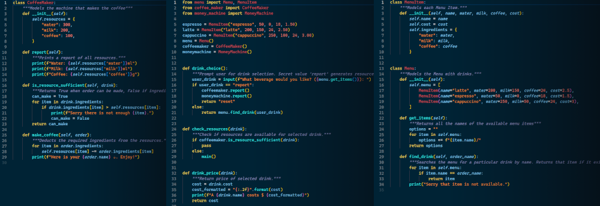

Project Showcase

Thank you for taking a moment to explore my projects. This section is under constant development and will expand over time. Here, you'll find a collection of projects that I've had the privilege to work on during my time so far as a computer science student.
Each endeavor presented here has taught me something valuable, not just about coding or technology, but also about persistence, problem-solving, and collaboration. They're far from perfect, but they reflect my growth and the joy I find in creating and learning. I hope you find them interesting, and I appreciate any feedback or insights you might have to offer.
DynaMain Aerospace Inc.

DynaMain Aerospace Inc. is my Aircraft Maintenance Engineering company. I am Toronto based, primarily serving AMOs (maintenance facilities) that require engineers for large maintenance and modification projects. I use my AME licence to complete work orders by inspecting, testing, documenting, and repairing aircraft and aircraft components and to certify the completion of work in accordance with the applicable engineering documentation.
Although most of my work contracts were made through industry connections, meaning advertising was not necessary, I challenged myself to create a website for my business nonetheless where I can learn the building blocks of HTML, CSS, and JS, in a way that makes my company really stands out. Here is the final result of that challenge. It is a static site that provides information pertaining to the primary services offered as well as contact info. No frameworks were used, only vanilla HTML, CSS, and JS. It is fully responsive and will scale excellently across all screen sizes, maintaining readability and a sleek design.
Class Roster

The Class Roster program is my debut into C++ OOP. It takes input data of student ID, name, email, age, days in courses, and degree program. The data is parsed and stored in Student objects. I wrote a variety of accessor and mutator functions for the Student class. There are also data validity checkers for info such as email formatting. A second class, the Roster, is used to hold to the Student Objects and loop through them to perform specific actions.
This is one of my first university projects and helped me to develop my skills and competancies around and using arrays, pointers, memory, function, and classes, using the object-oriented paradigm. I made sure to pay close attention to detail, organization, and to focus my efforts on making the Roster and Student classes mechanically sound.
Coffee Machine Simulator
My Coffee Machine Simulator is built using Python and OOP. It allows users to select a beverage type, enter coins, and receive coffee. Some of it's features are holding the money from coffee sales, tracking inventory of ingredients used to make different types of coffee, reporting when resources are low, and a user 'report' function to gather info on data stored.
Ever since I began my journey into the realm of computer science, Python has held a special place in my heart. Coding in Python and making this simulator along with countless other small projects, while learning programming fundamentals, has been a lot of fun. The readability, syntax, and versatility of python, evident through my projects, has enriched my passion for technology and coding and has provided my first true bridge between imagination and realization.
Snake Game

Recreating the age-old classic Snake Game using Python's Turtle module was both educational and entertaining. The game is very simple. Simply run main.py inside VSCode with Tkinter. The game opens with Turtle graphics, and the user can use the arrow keys to change direction of the snake. The goal is to eat the blue dots, and eating a dot increases the score. As the score increases, so does the speed and size of the snake. Try to get as high a score as possible.
I realized this game and the technologies used to create it were a great match after the project was completed. What better way to create this simplistic game other than using a concise, simplistically written language such as Python, and basic graphical tool such as the Turtle module.
More To Come Soon!
While these first few projects stand as a proud testament to my commitment and love for learning and using different languages and tools, it is just the beginning of a much larger journey. Just as technology and programming are in a constant evolution, so are the programmers, like myself. Each project has served as a valuable learning experience, and while I'm proud of what I've accomplished, I remain grounded in the realization that there's so much more to master.
I approach every project with a blend of enthusiasm and humility. I start them with the willingness to learn, adapt, and improve. I'm grateful for the opportunities that come my way, and that includes building and sharing my projects and skills here. I will continue to add projects and update this page as my journey marches onwards.